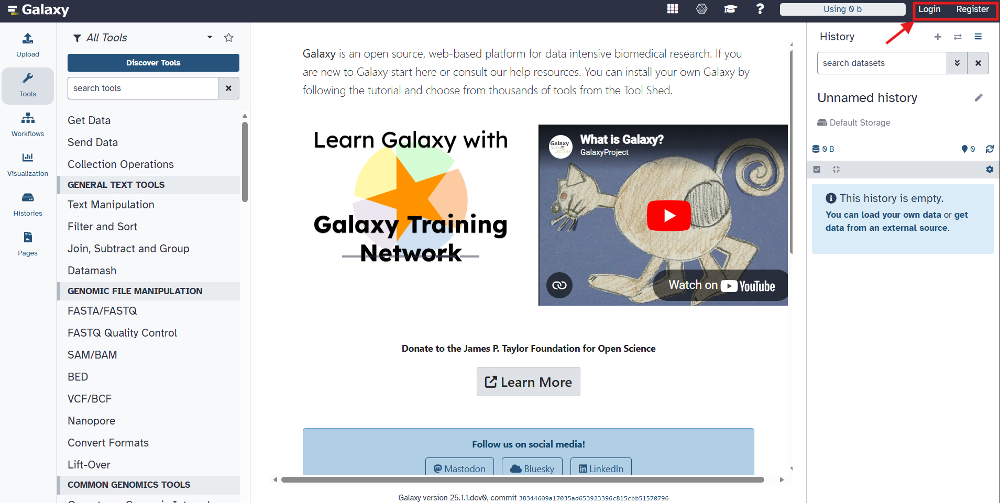
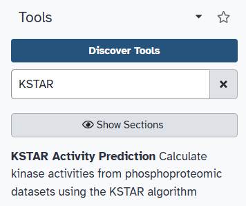
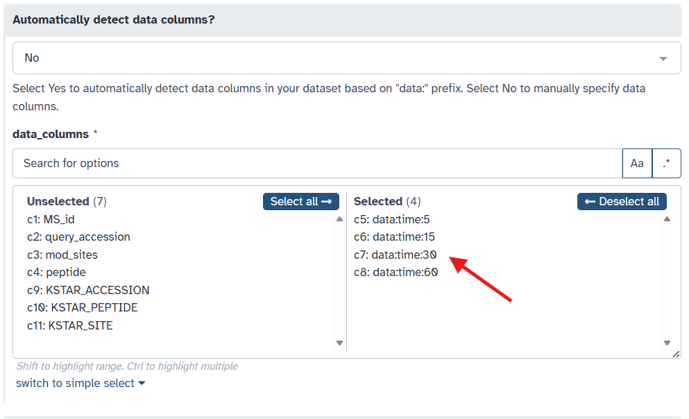
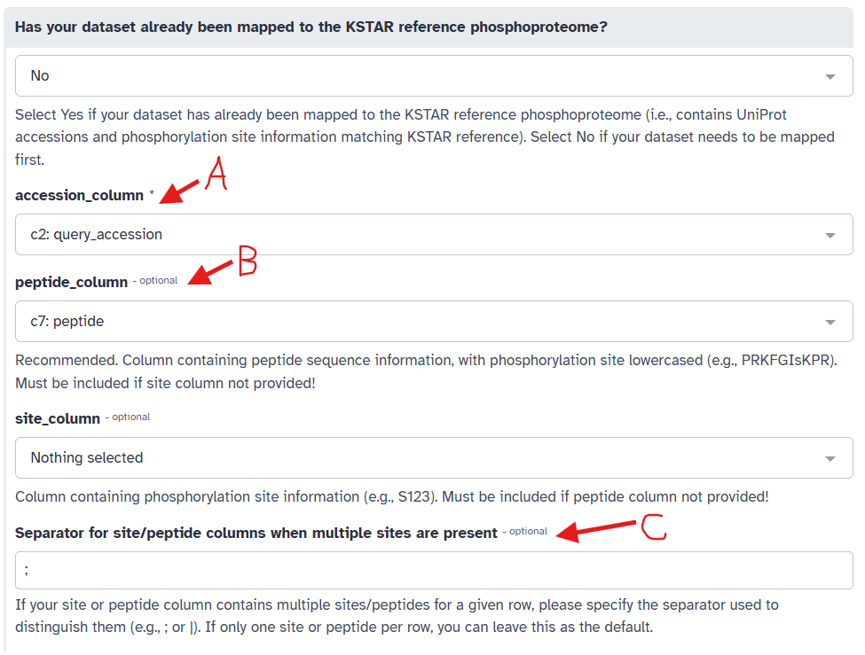
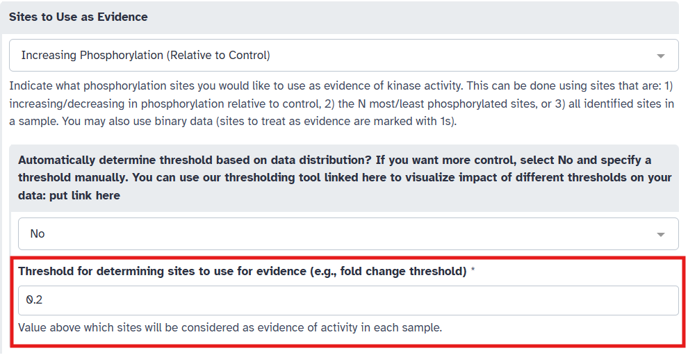
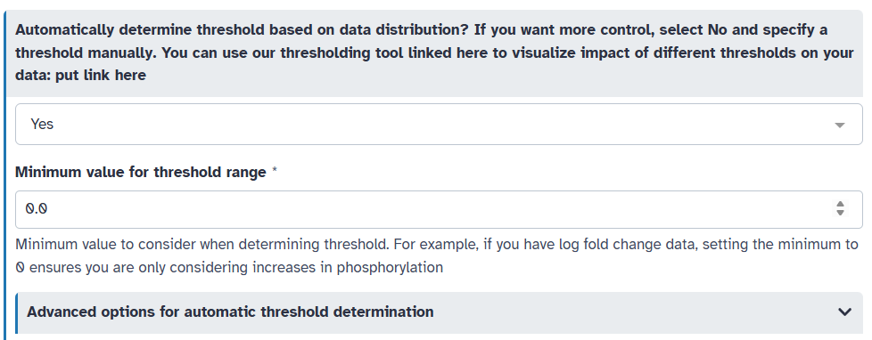
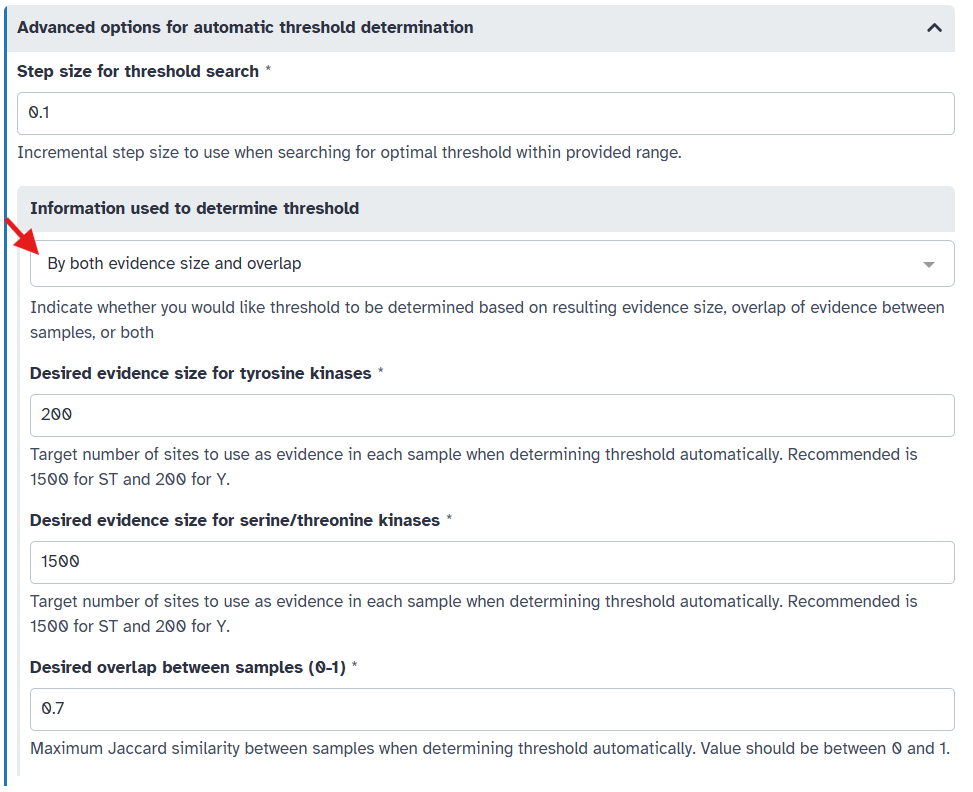

Run KSTAR on Galaxy#
KSTAR can be run on Galaxy using a dedicated KSTAR tool. This tool allows users to upload their phosphoproteomic data, configure KSTAR parameters, and execute the analysis directly within the Galaxy environment using the default KSTAR networks. This section will walk you through the process of running KSTAR on Galaxy and interpreting the outputs. If you want to know more about using Galaxy in general, such as how to use workflows to combine multiple tools, see the Galaxy Documentation for more resources and tutorials.
Before running KSTAR on Galaxy, make sure you have processed your phoshphoproteomic dataset to the appropriate format as described in Preparing your Data section. There are some checks in place to ensure that the data is in the correct format, but it is best to prepare your data correctly beforehand to avoid any issues.
Accessing the KSTAR Tool on Galaxy#
Navigate to the Galaxy web server at https://usegalaxy.org/. You will see something that looks like this:

Log in to the Galaxy portal. If you do not already have an account, create one by clicking on the “Register” button in the top right corner and following the registration process (this is free).
Once logged in, you can find the KSTAR tool by using the search bar on the left-hand side of the screen. Type “KSTAR” into the search bar, and the KSTAR tool should appear in the list of available tools.

{kind=link}
{kind=link}
Uploading Your Phosphoproteomic Data#
Click on the KSTAR tool to open it. You will see a form where you can upload your phosphoproteomic dataset and configure KSTAR parameters.
Upload your phosphoproteomic data file by clicking on the “Single Dataset” icon, then select the ‘…’ option to upload a dataset. Then click the “Upload” button in the bottom left corner of the pop up.
Assuming you would like to upload a local file, click on the “Choose local file” button to browse your computer for the file you wish to upload. Find your file and select it. Usually, Galaxy does a good job of autodetecting the file format, but you may want to specify it explicitly (must be CSV or tabular/tsv). Once selected, click the “Start” button to begin the upload process. Finally, click the checkmark that appears to confirm the upload.
When you close the window, you should see your uploaded dataset in the right panel, called the “History” panel. It should also now appear as an option in the dropdown menu under the “Upload your experiment” section. As a side note, you can choose to give the history a name by clicking on the pencil icon at the top of the History panel.
{kind=link}
{kind=link}
{kind=link}
Configuring KSTAR Parameters#
Make sure your uploaded dataset is selected in the “Upload your experiment” dropdown menu.
Indicate the column(s) containing your quantitative sample data by selecting the appropriate columns from the “data_columns” dropdown menu. In this example, we will select to predict activity for four samples: “data:time:5”, “data:time:15”, “data:time:30”, and “data:time:60”, which are measurements taken at different time points after stimulation.

Alternatively, if your data columns each begin with the prefix “data:”, you can instead select the “Yes” option under “Automatically detect data columns?” to have KSTAR automatically identify these columns for you. We could do this instead of manually selecting the columns in the previous step.
Next, we will indicate where phosphorylation site information is located in your dataset. To run, KSTAR requires a column containing UniProtKB accessions (ex. ‘P01308’). In addition, KSTAR must include at least one of the following columns and will thrown an error if neither are included:
Peptide sequences (ex. ‘AGLQyFPVGR’), recommended
Site positions (ex. ‘S1234’)
Select the appropriate columns for “accession_column”, “peptide_column”, and/or “site_column” from the respective dropdown menus. In this example, we will select “query_accession” for the accession IDs (A) and “peptide” for the peptide sequences (B).

You may also have multiple sites/peptides per row of your dataset. If this is the case, you can specify the delimiter (‘;’, ‘,’, etc.) used to separate these values in your dataset (C).
In the case where you have already mapped your dataset to the KSTAR reference phosphoproteome (“KSTAR_ACCESSION”, “KSTAR_SITE” columns are present in the dataset), you can select “Yes” under “Has your dataset already been mapped to the KSTAR reference phosphoproteome” and skip this step.
{kind=link}
{kind=link}
Next, we need to specify what sites should be used as evidence of activity for each sample column. The KSTAR galaxy tool provides several options for this under the “Sites to Use as Evidence”. What you choose will be dependent on your experimental design and biological question. Below is a table summarizing the available options:
Option
How Evidence is Identified
Best Use Case
Increasing Phosphorylation (Relative to Control)
Sites with quantification greater than some threshold
Differential quantification (i.e. stimulation)
Decreasing Phosphorylation (Relative to Control)
Sites with quantification less than some threshold
Differential quantification (i.e. inhibition)
Top N Sites
The N sites with greatest quantification
Single sample (i.e. patient measurements)
Bottom N Sites
The N sites with smallest quantification
Single sample (i.e. patient measurements)
All Sites
Any site with quantification (non-NaN or empty value)
Single sample/interested in broad activity
Binary (1s only)
Sites with a value of 1
Preprocessed data/groups (for example, clustered sites)
In this example, we will select “Increasing Phosphorylation (Relative to Control)” since we are interested in identifying kinases activated upon stimulation.
Indicate the type of kinases you would like to generate predictions for by specifying the phosphotype under “Type of phosphorylation to consider”. You can choose from “ST” (Serine/Threonine kinases), “Y” (Tyrosine kinases), or “STY” (both Serine/Threonine and Tyrosine kinases). In this example, we will select “Y” to consider only tyrosine kinases as the example dataset was phosphotyrosine enriched.
Depending on the option you selected in the previous step, you may need to provide additional parameters. For “Increasing Phosphorylation (Relative to Control)”, a threshold value is required to determine which sites are considered as evidence (i.e. sites with quantification above this threshold). To do this, you have two options:
Pick a threshold manually based on your knowledge of the dataset. For example, in this example, we have log2 fold change data, so we may want to capture sites with some minimum increase in phosphorylation. Here, we set “Automatically determine threshold based on data distribution” to “No” and set the threshold to 0.2.

Or, you can have KSTAR automatically determine an appropriate threshold based on the data distribution. To do this, set “Automatically determine threshold based on data distribution” to “Yes”. You will need to specify a minimum threshold (to ensure biological relevance). Here, given that we have log2 fold change data, we wouldn’t want to capture sites with decreases in phosphorylation, so let’s set the minimum threshold to 0.

By default, KSTAR selects the largest threshold that both captures a sufficient number of sites on average across all samples and ensures that there is not too much overlap in evidence between samples. You can adjust these parameters if desired under “Advanced options for automatic threshold selection”. Most important of these is whether to consider both evidence size and overlap between samples, or just one of these factors. You can also adjust the desired evidence size and overlap if you like.

Once happy with your parameter selections, click the “Run Tool” button at the bottom of the form. This will submit your KSTAR job to the Galaxy server for processing and you should see 2-4 new data boxes appear in the right “History” panel. Depending on the size of your dataset and the current load on the Galaxy server, this may take a little bit of time. You can monitor the progress of your job in the “History” panel on the right-hand side of the screen. You might see a couple of things:
If the job is completed successfully, it will be marked with a green checkmark.
If the job is still running, the Run Info box will be marked with a spinning wheel and be yellow.
If the job fails for some unexpected reason, it will be marked with a red “X”. You can inspect the error message by clicking on the dataset. If you encounter an error, inspect the errors file under the Run Info box for more details and check our guide on troubleshooting issues. If you are unable to resolve the issue, please feel free to contact the KSTAR team for assistance or add an issue on the KSTAR Galaxy github repository.
{kind=link}
{kind=link}
{kind=link}
KSTAR Outputs#
Once the KSTAR job is complete, you will see two to four new dataset collections in your History panel:
- Run Info: General run information
params: json file with all parameters used for the KSTAR run
errors: text file with any warnings or errors encountered during processing (will be empty if the run completed without any issues)
log: text file with a list of all output files generated by KSTAR during the run
- Mapping Data: collection of data including the original dataset mapped to the KSTAR reference phosphoproteome. If you had already mapped your data, this will not be present.
mapped_experiment: The original dataset with additional columns for KSTAR_ACCESSION and KSTAR_SITE
mapping_stats: Summary statistics about the mapping process (number of sites mapped or lost etc.)
removed_sites: rows/sites that were removed during the mapping process and the reason for their removal
- Tyr_Kinase_Outputs: The main output of KSTAR for tyrosine kinases. Will be empty if you selected ST phosphotype.
experiment_Y_binarized_experiment: The binarized evidence matrix used for KSTAR activity calculation, indicating which sites were used as evidence for each sample column
experiment_Y_mann_whitney_activities: The predicted kinase activity scores for each sample column
experiment_Y_mann_whitney_fpr: The false positive rates associated with each kinase activity prediction
experiment_Y_summary_pdf: A short three page summary of KSTAR results, including parameters, top kinases, dotplot, and evidence characteristics
Y_threshold_plot: if you chose to use a threshold for evidence selection, this plot will show the number of sites and similarity between columns at different threshold values to help you understand the threshold selection process
Y_failures: indicates whether activity prediction succeeded, failed completely, or was able to predict activity for only some columns
- SerThr_Kinase_Outputs: The main output of KSTAR for serine/threonine kinases. Will be empty if you selected Y phosphotype.
experiment_ST_binarized_experiment: The binarized evidence matrix used for KSTAR activity calculation, indicating which sites were used as evidence for each sample column
experiment_ST_mann_whitney_activities: The predicted kinase activity scores for each sample column
experiment_ST_mann_whitney_fpr: The false positive rates associated with each kinase activity prediction
experiment_ST_summary_pdf: A short three page summary of KSTAR results, including parameters, top kinases, dotplot, and evidence characteristics
ST_threshold_plot: if you chose to use a threshold for evidence selection, this plot will show the number of sites and similarity between columns at different threshold values to help you understand the threshold selection process
ST_failures: indicates whether activity prediction succeeded, failed completely, or was able to predict activity for only some columns
You can download any or all of these datasets by clicking on the data and selecting the “Download” option from the pop-up menu.